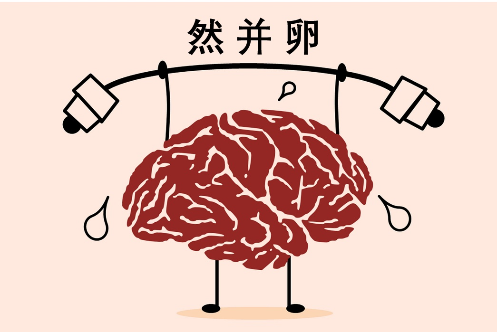
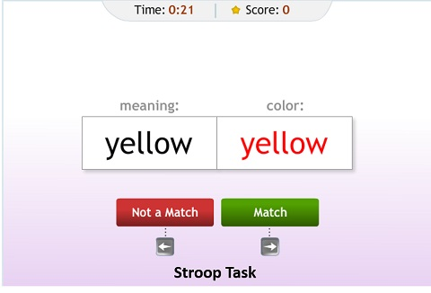
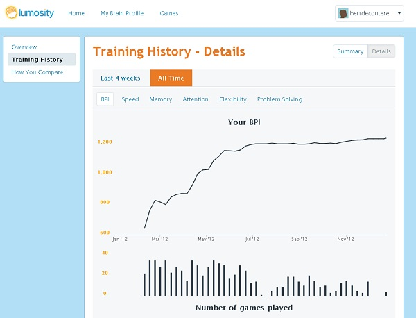
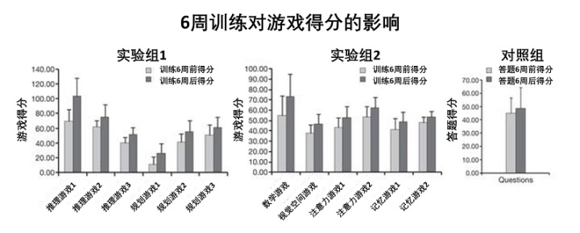
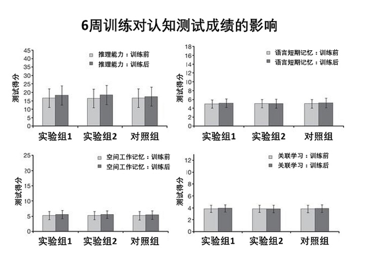
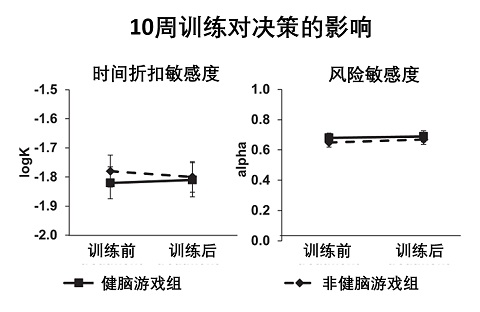
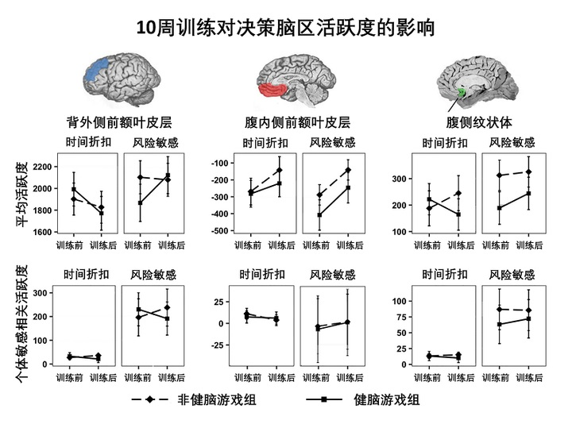

当今社会竞争激烈。谁不想变得更聪明，在学业职场上先人一步？
于是商人们做起了脑力训练（Brain Training）的生意。就像去健身房健身一样，人们可以在电脑或手机上玩各种“健脑”游戏来提高大脑各方面的能力。
脑力训练真的有用吗？

脑力训练是啥玩意儿
http://Lumosity.com是比较有名的一个脑力训练公司，在全球182个国家有超过8千5百万的用户。他们的健脑游戏被玩了超过30亿次，在移动平台下载量超过3千5百万次 [1]。
Lumosity针对大脑的反应速度，记忆，注意力，灵活性和问题解决能力5个方面设计了一系列的脑力游戏给用户玩。
下图是一个训练空间记忆（spatial memory）的游戏。用户在一定时间内记住那些格子是红色，然后在测试阶段点开记忆中是红色的格子。随着游戏的进行，格子的数量会逐渐提升，用户记的信息量也逐步变大。

又如下图是经典的Stroop task [2]。你需要在最快的速度内判断出当前字的意思和字的颜色是否对应。这个游戏能测试游戏人的认知控制力（cognitive control）- 这里即大脑调控在文字加工和颜色感知的效率。

经过训练，用户的游戏玩得越来越溜。Lumosity把游戏的得分转换成脑力系数（Brain Performance Index），并对用户在反应速度，记忆，注意力，灵活性和问题解决能力5个方面进行打分。随着游戏次数的累计，大脑的脑力评分也逐渐增加，仿佛这些认知能力真的得到了改善。真是这样吗？

脑力训练并不改善认知
2010年在《自然》（Nature）上报道了一个大样本的实验 [3]。作者们和BBC英国广播公司的科普节目「Bang Goes The Theory」合作 [4]，召集了11430名观众进行了为期6周的线上研究。这些观众在实验前先做了推理（reasoning），语言短期记忆（verbal short-term memory），空间工作记忆（spatial working memory）以及一对一关联学习（paired-associates learning）等认知能力的测试。
这些志愿者被随机分配到三个组。每周要上指定网站玩健脑游戏三次，每次至少10分钟。第一个组的游戏主要涉及推理，规划和问题解决能力。第二个组主要训练短期记忆，注意力，视觉空间加工和数学能力。第三个组为对照组，不做脑力训练，每次上线只回答一些智力问题。
6周之后，两个实验组几乎在所有的健脑游戏上都获得了显著的提高。

可是，重复实验前的认知能力测试之后，作者发现健脑游戏上得分的提高并没有转化成相应认知能力的提高。从平均值来看，认知测试的结果在脑力训练前后几乎没有变化。个体间游戏得分和认知测试的相关性也小到基本可以忽略：最大的相关系数只有0.073（心理学中相关系数在0.3以上才被认为是有小量的相关性）。

那么有没可能健脑游戏是可以改善具体的行为方式，只是这些认知测试测不出来罢了**？**
呵呵你想多了，脑力训练也不改善行为
本月初在高逼格的《神经科学杂志》（Journal of Neuroscience）刚刚出炉了一篇文章 [5]，对上面这种说法做出了很好的解答。
这个研究关注的是大脑的认知控制力（cognitive control）。我们在日常生活中面临着各种诱惑。认知自控力低的人禁不住眼前的诱惑，过度饮食，沉迷游戏，或是从事高风险的活动（如犯罪）。
那健脑游戏能不能改善认知控制力，让人们经得住诱惑，做出更理性的选择呢？
实验人设计了两类情境，让被试像在现实生活中一样做出选择。第一类情境测试的是时间折扣（delay discounting）对决策的影响。比如志愿者要在「马上获得20美元」和「一个月后获得40美元」中做出选择。虽然第二个选项收益更大，可是很多人等不了一个月，觉得今天的20美元比一个月后的40美元更有吸引力。认知控制力越高，时间折扣的影响越小，人就越能做出更理智的选择。
第二个情境测试的是决策者对风险的敏感度（risk sensitivity）。比如被试要在「100%几率获得20美元」和「50%几率获得40美元」中做出选择。两个选择的期望收益是一样的，都是20美元。认知控制力越高，人越倾向于选择规避风险的选项一。
实验人随机找了128个成年被试，将他们分为两组。在10周内，实验组定时定量的玩健脑游戏来训练认知控制力，对照组则相应的玩非健脑的电脑游戏。
10周后，实验组的健脑游戏确实是玩的越来越溜。但是很不幸的是，和对照组一样，他们对时间折扣和风险的敏感度都没有发生显著的变化。

更要命的是，决策相关脑区的活跃度在训练前后也没有显著变化。我们已经知道背外侧前额叶皮层（dorsolateral prefrontal cortex）跟时间折扣的敏感度相关 [6]。腹内侧前额叶皮层（ventromedial prefrontal cortex）以及腹侧纹状体（ventral striatum）和价值判断相关 [7]。这三个脑区在做决策时的活跃度都没有受健脑游戏训练的影响。也就是说，健脑游戏不但没有改变行为方式，连大脑相关的神经活动都没有显著的影响。

把时间花在刀刃上
目前科学界对脑力训练比较一致的看法是：练啥啥厉害，但是在单个任务上的提高通常不能泛化到其他任务。
比如你花了很多时间学日语，在语言方面的提高跟你的钢琴水平并没有半点关系。健脑游戏玩的再溜，比如前面介绍的记格子位置的游戏，这个游戏玩的再好，也只提高了你记忆格子分布的能力，对于帮助你记忆钥匙放哪里了并没有什么卵用。
目前黑健脑游戏的证据大多是在健康的成年人上获得的。一种说法是成年人智力发育成熟，没有多少上升的空间。健脑游戏也许对发育中的儿童，痴呆的老人，以及天生智障的人会有一定的效果，有待进一步研究。
可以肯定的是，对于我们大多数的健康成年人来说，即使健脑游戏有效果，那也是小到可以忽略的（小到1万多人的样本都测不出显著结果），完全不值得在上面花大量的时间和金钱。
如果真要提高自己在某方面的能力，就应该把时间和金钱直接花在训练这个能力上。
因为我们只见过十年磨一剑的专家，没听说过玩游戏很溜的全才啊。
参考文献
- https://www.lumosity.com/press
- https://en.wikipedia.org/wiki/Stroop_effect
- Owen, A. M., Hampshire, A., Grahn, J. A., Stenton, R., Dajani, S., Burns, A. S., …& Ballard, C. G. (2010). Putting brain training to the test. Nature, 465(7299), 775-778.
- http://www.bbc.co.uk/programmes/b00s5fvq
- Kable, J. W., Caulfield, M. K., Falcone, M., McConnell, M., Bernardo, L., Parthasarathi, T., … & Diefenbach, P. (2017). No Effect of Commercial Cognitive Training on Brain Activity, Choice Behavior, or Cognitive Performance. Journal of Neuroscience, 37(31), 7390-7402.
- Wesley, M. J., & Bickel, W. K. (2014). Remember the future II: meta-analyses and functional overlap of working memory and delay discounting. Biological psychiatry, 75(6), 435-448.
- Hare, T. A., Camerer, C. F., & Rangel, A. (2009). Self-control in decision-making involves modulation of the vmPFC valuation system. Science, 324(5927), 646-648.